Bem-vindo ao
As pastas mantêm chats, arquivos e instruções personalizadas em um único lugar. Use-as para trabalhos em andamento ou apenas para manter as coisas organizadas.
Carregando chats...
Arraste chats para esta pasta para organizá-los.
Solicitar suporte remoto permite que nosso time de suporte acesse sua conta por 72 horas.
Solte seus arquivos aqui.
Adicione até 30 arquivos ((jpg, png, jpeg, webp)) com o tamanho máximo de 200MB.
Arquivo inválido. Por favor, verifique o tipo e tamanho permitidos.
TypeScript com Next.js (React) + Supabase + Vercel.
Motivos:
| Nome | Ideia |
|---|---|
| FisioPonto | Fisioterapia e pontos de acupuntura |
| AgendaZen | Agenda com ideia de bem-estar |
| PontoVital | Pontos de agulha e vitalidade |
| Clinixa | Curto, moderno e fácil de registrar |
| MeridianoPro | Remete à acupuntura, com tom profissional |
Minha recomendação é FisioPonto ou PontoVital. Antes de escolher, verifique a disponibilidade do domínio (.com.br) e a marca no INPI.
TextCopiar para área de transferência Você é um arquiteto de software sênior e desenvolvedor full-stack. Quero que você construa um SaaS multi-clínica chamado "[NOME DO PRODUTO]", para gestão de clínicas e profissionais autônomos de FISIOTERAPIA e ACUPUNTURA, no Brasil. ## STACK OBRIGATÓRIA - Next.js 14+ (App Router) com TypeScript - Tailwind CSS + shadcn/ui - Supabase (Postgres, Auth, Storage, Row Level Security, Realtime) - Hospedagem na Vercel - React Hook Form + Zod, date-fns (locale pt-BR), Recharts - PWA instalável, mobile-first e responsivo - Idioma da interface: Português (Brasil). Moeda: BRL. Fuso: America/Sao_Paulo ## ENTREGA ESPERADA Trabalhe em etapas. Em cada etapa entregue o código completo dos arquivos, as instruções de execução e o que testar. Comece por: 1. Arquitetura e estrutura de pastas 2. Schema SQL completo do Supabase (tabelas, índices, constraints, RLS, triggers, funções) 3. Autenticação e multi-tenancy 4. Módulos, um por vez, na ordem listada abaixo Pergunte "posso seguir para a próxima etapa?" ao final de cada uma. ## MULTI-TENANCY E PERFIS - Cada clínica ou profissional autônomo é um "tenant" (tabela clinics). Todos os dados levam clinic_id. - RLS obrigatório em todas as tabelas: um tenant nunca acessa dados de outro. - Perfis (roles): owner (dono), admin, professional (fisioterapeuta/acupunturista), receptionist (recepção), financial e patient (paciente, acesso restrito aos próprios dados). - Permissões por perfil. Exemplo: a recepção não vê o prontuário clínico; o financeiro só vê o módulo financeiro. - Um profissional autônomo se cadastra e cria sua clínica em um onboarding de 3 passos. - Preparar o modelo para planos de assinatura do SaaS (trial de 14 dias, planos por nº de profissionais). ## MÓDULO 1: SETUP / CONFIGURAÇÕES DA CLÍNICA 1. Dados da clínica: nome, CNPJ/CPF, endereço, logo, telefone, cores. 2. Profissionais: nome, especialidade (fisioterapia, acupuntura ou ambas), registro (CREFITO), foto, cor na agenda. 3. Serviços / tipos de atendimento: nome, duração, especialidade, ativo/inativo. 4. Tabelas de preço e segmentos de paciente: - A clínica cria segmentos de paciente livres (ex.: Particular, VIP, Funcionário, Convênio, Social, Fidelidade Gold). - Cada serviço tem preços diferentes por segmento. - Modalidades de cobrança por serviço e segmento: a) Consulta avulsa (valor único) b) Pacote de sessões (ex.: 10 sessões por R$ X, validade em dias, regras de uso e de cancelamento) c) Plano de fidelidade/recorrência (mensalidade com nº de sessões ou preço reduzido) - Após o paciente se cadastrar, a clínica atribui ou altera o segmento dele, e isso passa a definir os preços automaticamente. Guardar o histórico das mudanças de segmento. 5. Convênios: - Cadastro de operadoras (nome, registro ANS, contato) - Planos de cada convênio (nome, cobertura, valor de repasse por procedimento, carência, necessidade de guia/autorização, limite de sessões) - Vínculo do paciente com convênio e plano (nº da carteirinha, validade) - Controle de guias e autorizações (nº da guia, sessões autorizadas, sessões usadas) 6. Agendas e horários: - Criar agenda por profissional e local/sala - Definir dias da semana, horário de início e fim, duração do slot, intervalos e pausas - Cada horário tem um status: LIVRE (visível ao paciente no agendamento online), BLOQUEADO/RESERVADO (visível só à equipe, para encaixes e uso interno) ou OCUPADO - Permitir transformar um horário bloqueado em livre, e vice-versa, com 1 clique - Bloqueios pontuais (férias, feriados, folga) - Regras: antecedência mínima para agendar, limite de cancelamento, máximo de dias à frente - Gerar slots a partir de regras de recorrência, sem criar milhares de linhas desnecessárias ## MÓDULO 2: PACIENTES - Cadastro completo: nome, CPF, data de nascimento, sexo, telefone/WhatsApp, e-mail, endereço, profissão, contato de emergência, observações, foto - Segmento de preço, convênio e plano - Consentimento LGPD com registro de data e IP - Busca rápida, filtros, status (ativo/inativo) - Linha do tempo do paciente: consultas, pagamentos, documentos - Upload de exames e documentos (Supabase Storage, bucket privado, com URLs assinadas) ## MÓDULO 3: QR CODE E AUTOCADASTRO DO PACIENTE - Seção "Divulgação" no painel, que gera um QR Code (para baixar em PNG/PDF e imprimir) e um link público: /c/[slug-da-clinica] - A página pública, otimizada para celular, com a marca da clínica, tem: 1. Cadastro do paciente (dados básicos, LGPD, senha ou login por link mágico/OTP) 2. Após o cadastro, a área do paciente, onde ele vê os dias e horários LIVRES e agenda sua consulta 3. Ele pode ver seus agendamentos, cancelar ou remarcar (respeitando as regras), e ver seus pacotes e saldo de sessões - O paciente recém-cadastrado entra com o segmento padrão. Depois a clínica pode alterar o segmento. - Proteção contra spam (rate limit, captcha) e validação de CPF. ## MÓDULO 4: AGENDA E CONSULTAS - Visões dia, semana e mês, com filtro por profissional e sala, em drag-and-drop - Agendamento manual pela equipe (inclusive em horário bloqueado, como encaixe) - Status: agendado, confirmado, check-in, em atendimento, concluído, faltou, cancelado, remarcado - Agendamento recorrente (ex.: 2x por semana por 10 semanas), com consumo automático do pacote - Lembretes automáticos por WhatsApp/e-mail (deixar integração preparada: Evolution API/Twilio/Resend) - Lista de espera - Ao concluir a consulta, gerar a cobrança conforme o preço do segmento, ou descontar do pacote, ou registrar como guia de convênio ## MÓDULO 5: PRONTUÁRIO ELETRÔNICO - Prontuário por paciente, com histórico cronológico e imutável. Edições posteriores geram nova versão, com log de auditoria (quem, quando, o quê). - Acesso apenas a profissionais autorizados, com RLS. - Anamnese inicial (queixa principal, histórico, medicações, alergias, cirurgias, hábitos), com formulários personalizáveis por especialidade - Evolução por sessão (SOAP: Subjetivo, Objetivo, Avaliação, Plano), com escala de dor (EVA 0-10) - Anexos (exames, fotos) e assinatura/confirmação do profissional - Impressão/exportação em PDF ### 5.1 FISIOTERAPIA: Mapa corporal de lesões - Imagem SVG interativa do corpo humano, vista de FRENTE e de COSTAS (lado a lado ou alternando) - O fisioterapeuta clica/toca sobre o corpo para marcar o local da lesão/dor - Cada marcação tem: região, tipo (dor, contratura, edema, limitação, lesão), intensidade (0-10), lado, observações e data - Marcações com cores e ícones diferentes por tipo - Cada sessão salva seu próprio mapa (snapshot), e é possível comparar a evolução entre sessões (antes/depois) - Regiões anatômicas nomeadas (cabeça, cervical, ombro D/E, lombar etc.) ### 5.2 ACUPUNTURA: Mapa de pontos - Mesma imagem do corpo (frente e costas), com camadas ligáveis/desligáveis - Base de dados COMPLETA dos pontos de acupuntura: os 12 meridianos principais (Pulmão P/LU, Intestino Grosso IG/LI, Estômago E/ST, Baço-Pâncreas BP/SP, Coração C/HT, Intestino Delgado ID/SI, Bexiga B/BL, Rim R/KI, Pericárdio PC/PC, Triplo Aquecedor TA/SJ, Vesícula Biliar VB/GB, Fígado F/LR), os 2 vasos extraordinários (Du Mai/VG e Ren Mai/VC), os pontos extras (EX) e, opcionalmente, auriculoterapia (mapa da orelha) e craniopuntura, como módulo futuro - Tabela points com: código (ex.: E36/ST36), nome em pinyin, nome em português, meridiano, localização anatômica, indicações, coordenadas x/y no desenho (frente/costas) e tipo (tonificação, sedação, fonte etc.) - Gere o seed SQL/JSON com o máximo possível de pontos, de forma organizada em arquivos por meridiano. Marque claramente os dados que precisam de revisão por profissional habilitado, e deixe as coordenadas no corpo ajustáveis por um editor visual interno. - Busca de ponto por código ou nome, e filtro por meridiano - Na sessão, o acupunturista seleciona os pontos aplicados no desenho ou pela busca e, para cada ponto, registra: lado (D/E/bilateral), técnica (agulha, moxa, ventosa, eletroacupuntura, laser, auriculo), tempo de retenção, profundidade e observações - Salvar um protocolo/receita de pontos para reutilizar (ex.: "Lombalgia – protocolo 1") - Histórico: ver quais pontos foram usados em cada sessão e sua frequência, com a opção "repetir sessão anterior" ## MÓDULO 6: FINANCEIRO - Contas a receber geradas pelas consultas, pacotes e mensalidades - Registro de pagamento: Pix, cartão, dinheiro, boleto, convênio, com pagamentos parciais - Caixa diário, contas a pagar (despesas, categorias, recorrência) - Faturamento de convênio: lotes por operadora, glosas, status (enviado, pago, glosado) - Repasse/comissão por profissional (percentual ou valor fixo) - Relatórios: receita por período, por profissional, por serviço, por segmento e por convênio; inadimplência; ticket médio; DRE simplificado - Exportar para CSV/PDF - Integração opcional preparada para Asaas/Stripe (cobrança Pix/boleto) ## MÓDULO 7: DASHBOARD E RELATÓRIOS - Indicadores: consultas do dia, taxa de faltas, ocupação da agenda, novos pacientes, receita do mês, pacotes a vencer, pacientes inativos há mais de 30 dias - Gráficos com Recharts ## REQUISITOS NÃO FUNCIONAIS - Segurança: RLS em tudo, validação Zod no servidor, variáveis de ambiente, sem chaves expostas no cliente, buckets privados, logs de auditoria - LGPD: dados de saúde são sensíveis. Incluir consentimento, exportação e exclusão de dados do paciente, política de privacidade e termos de uso - Performance: paginação, índices, Server Components quando fizer sentido - Acessibilidade e UX simples para profissionais pouco técnicos - Testes dos fluxos críticos (agendamento, preço por segmento, RLS) - Backup e migrations versionadas (Supabase CLI) - Deploy: passo a passo para Supabase + Vercel (variáveis de ambiente, domínio personalizado, ambientes staging/produção) ## MODELO DE DADOS (mínimo esperado, refine conforme necessário) clinics, clinic_members, professionals, patients, patient_segments, patient_segment_history, services, service_prices, packages, patient_packages, loyalty_plans, insurers, insurance_plans, patient_insurances, insurance_authorizations, schedules, schedule_rules, schedule_blocks, slots/appointments, appointment_status_log, medical_records, record_entries, body_markings, acupuncture_points, acupuncture_session_points, treatment_protocols, attachments, receivables, payments, expenses, insurance_batches, commissions, audit_logs, subscriptions, public_pages. ## COMO COMEÇAR Primeiro responda com: (1) resumo da arquitetura, (2) diagrama de entidades em texto, (3) estrutura de pastas, (4) lista das etapas de desenvolvimento com ordem sugerida (MVP primeiro: setup, pacientes, agenda, QR Code, prontuário; depois financeiro e convênios). Aguarde minha aprovação antes de gerar o código.
Se quiser, posso adaptar o prompt com o nome escolhido, criar uma versão resumida só do MVP ou montar o prompt separado por módulos.
Aqui está a proposta completa de Identidade Visual e Conceito de Marca para o AgendaZen, pensada estrategicamente para transmitir confiança clínica, organização tecnológica e o bem-estar característico da fisioterapia e da acupuntura.
A paleta combina a seriedade e segurança de um software clínico com o frescor terapêutico da saúde integrativa:
| Cor | HEX | Função na Interface (Next.js / Tailwind) | Significado Psicológico |
|---|---|---|---|
| Deep Teal (Verde Petróleo Profundo) | #0F4C5C | Cor primária, cabeçalhos, botões principais (primary), barras de navegação | Segurança, solidez institucional, precisão técnica |
| Jade / Sage Green (Verde Sálvia) | #52B788 | Cor secundária, ações de sucesso, horários livres, destaques positivos (success) | Cura, vitalidade, alívio da dor, medicina natural e bem-estar |
| Soft Warm Gold (Dourado Suave / Areia) | #E0A96D | Acentos, selos de planos VIP/fidelidade, marcações especiais e alertas suaves | Energia vital (Qi), calor humano, agulhas de acupuntura |
| Slate Gray (Cinza Ardósia) | #2B2D42 | Tipografia principal, títulos, textos de prontuário e ícones neutros | Clareza de leitura, alto contraste e elegância moderna |
| Clean Background (Fundo Limpo) | #F8FAFC | Fundo geral da aplicação (bg-slate-50) | Higiene, amplitude e descanso visual |
| White (Branco Puro) | #FFFFFF | Cards, modais de agendamento, tabelas e superfícies | Contraste clínico e organização |
tailwind.config.ts:
TypeScript
Copiar para área de transferência
colors: {
brand: {
dark: '#0F4C5C', // Deep Teal
primary: '#13677A', // Teal intermediário para botões hover
light: '#52B788', // Jade / Sage
accent: '#E0A96D', // Dourado / Areia
surface: '#F8FAFC', // Fundo suave
text: '#2B2D42', // Texto escuro
}
}
Para uma leitura agradável tanto no computador quanto na tela pequena do celular (prontuário e agendamento via QR Code):
"Escaneie para fazer seu cadastro e escolher seu horário de atendimento."
Se desejar, podemos desmembrar esse ícone para um formato de ícone de aplicativo (app icon quadrado) ou gerar o modelo da tela de agendamento do paciente com essa identidade!
As pastas mantêm chats, arquivos e instruções personalizadas em um único lugar. Use-as para trabalhos em andamento ou apenas para manter as coisas organizadas.
Carregando chats...
Arraste chats para esta pasta para organizá-los.
Carregando...